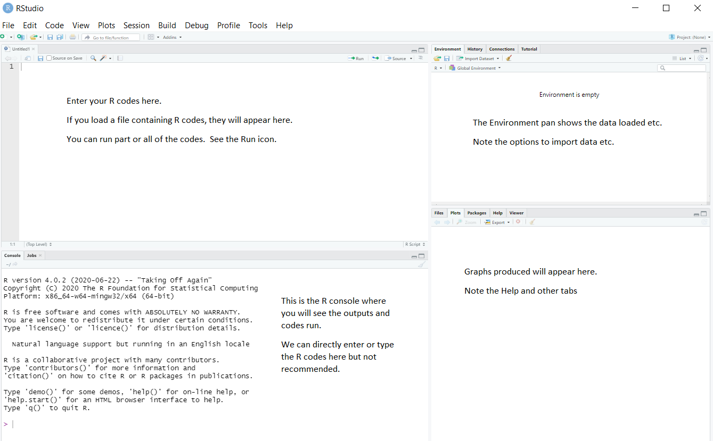
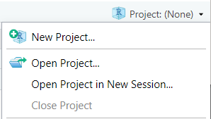
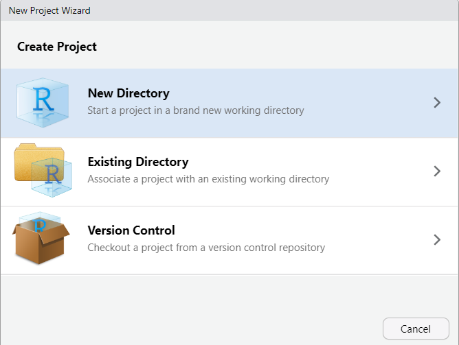
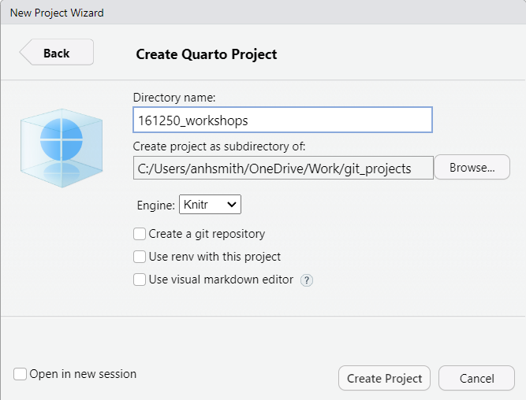
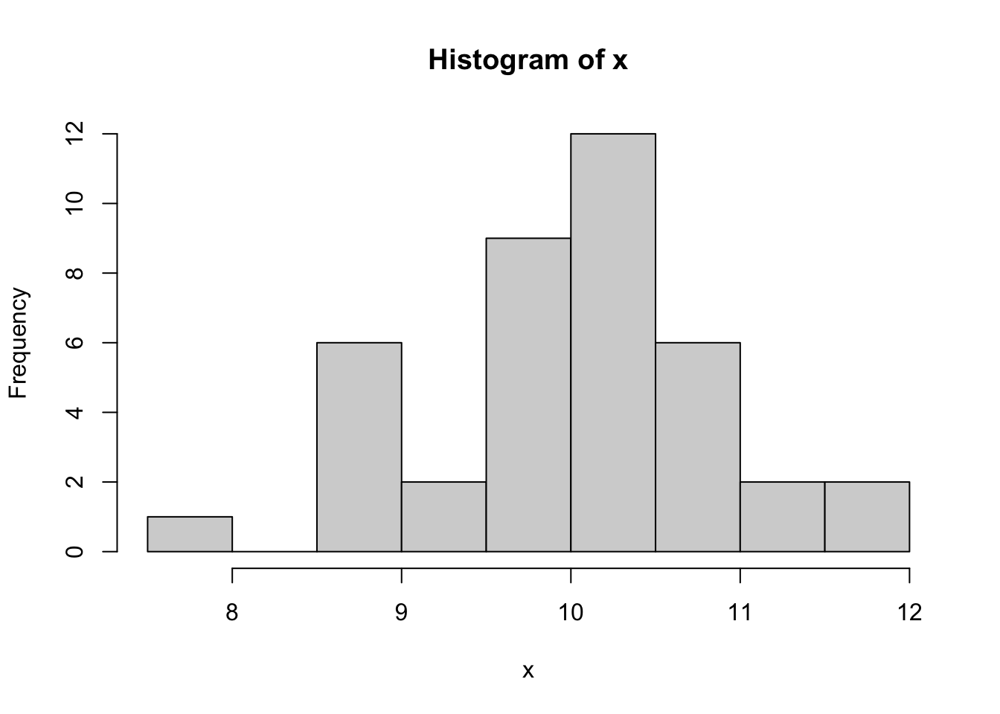
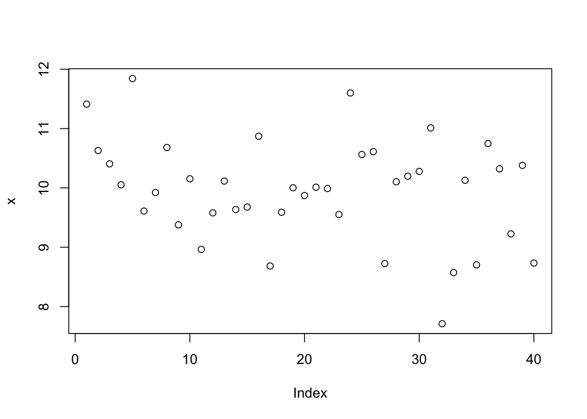
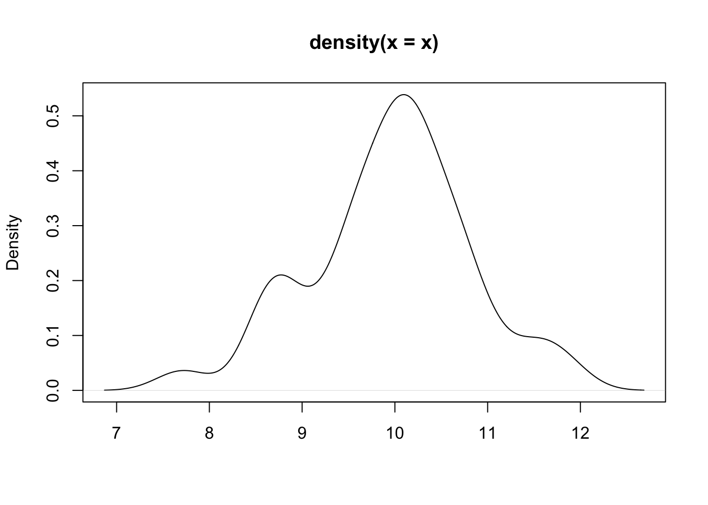
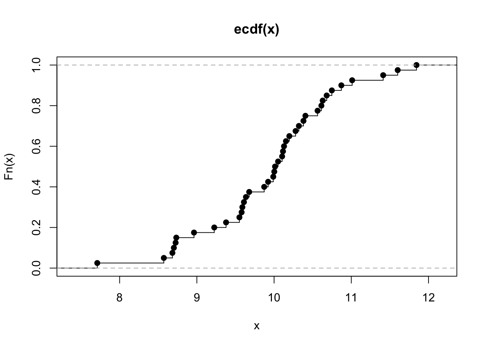
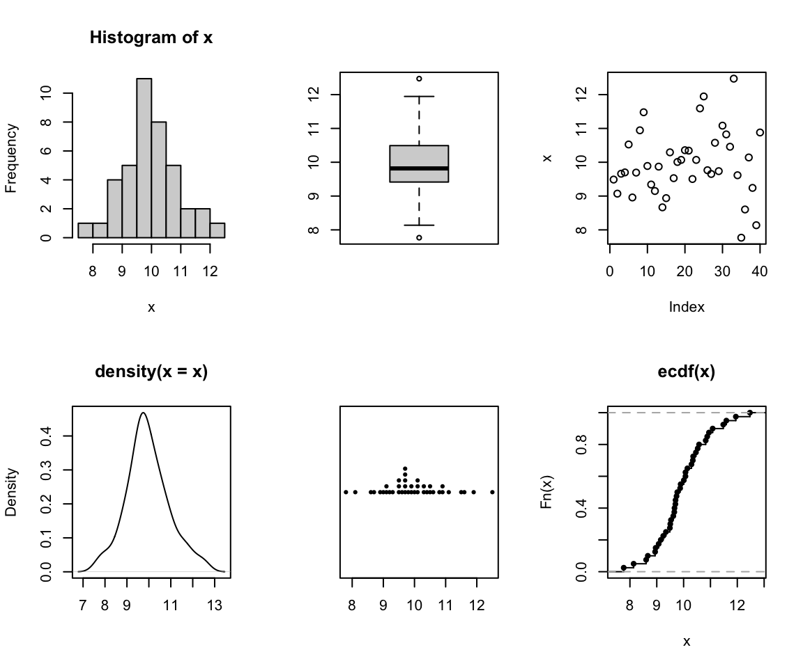
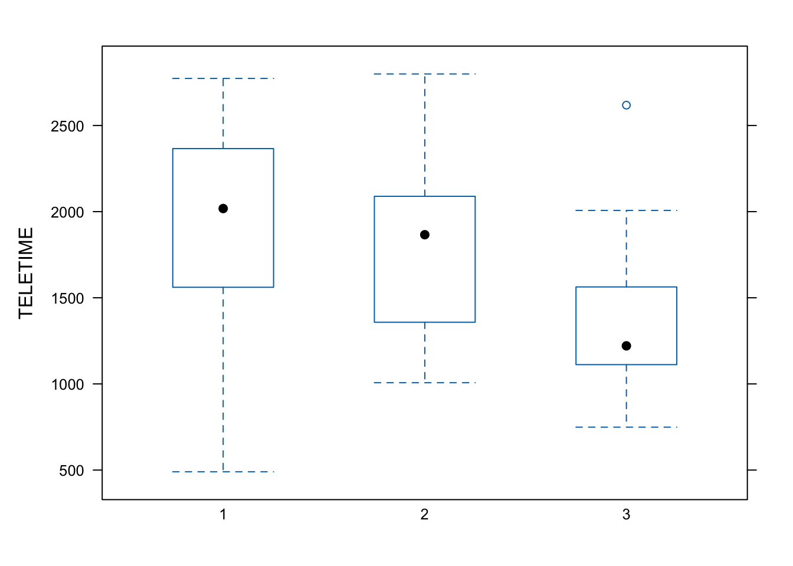

Code
library(tidyverse)R and RStudioIn this course, we will be using R https://www.r-project.org/, an open-source (i.e., free) software package for data analysis. This software is available for essentially all computing platforms (e.g. Windows, Linux, Unix, Mac) is maintained and developed by a huge community of users including many of the world’s foremost statisticians.
R is a programming language but you may not be required to do a lot of programming for your course work. R includes functions which enables us to perform a full range of statistical analyses.
For installing R software, please visit https://cran.stat.auckland.ac.nz/ and follow the instructions.
Note that the R software will be sitting in the background in RStudio and you will not be using the standalone version of R in this course.
RStudio https://www.rstudio.com/products/rstudio/ is an integrated development environment (IDE) for R. It includes a console and a sophisticated code editor. It also contains tools for plotting, history, debugging, and management of workspaces and projects. RStudio has many other features such as authoring HTML, PDF, Word Documents, and slide shows. In order to download RStudio (Desktop edition, open source), go to
https://www.rstudio.com/products/rstudio/download/
Download the installation file and run it. Note that RStudio must be installed after installing R.
R/RStudio can also be run on a cloud platform at https://rstudio.cloud/ after creating a free account. Be aware though that some of the packages covered in this course may not work in the cloud platform and there is a maximum amount of computing time. We do not recommend relying on the cloud platform for this course.
If you open RStudio, you will see something similar to the screen shot shown in Figure 1:

RStudio has many options, such as uploading files to a server, creating documents, etc. You will be using only a few of the options. You will not be using the menus such as Build, Debug, Profile at all in this course.
You can either type or copy and paste the R codes appearing in this section on to the R Script window and run them.
This course will be using Quarto *.qmd files rather than raw *.R files. Heard of Rmarkdown? Well, Quarto is the successor to Rmarkdown. So, if you’re just starting to use R, then you should begin with Quarto rather than Rmarkdown, because most/all new development will be going into Quarto.
Here’s some information to get you started: https://quarto.org/docs/get-started/hello/rstudio.html.
And some other useful tips: https://r4ds.hadley.nz/quarto.
We will be using Quarto documents. You can open a blank one by clicking File > New File > Quarto Document.
You can then make your own document or copy code from the course website and paste it into your new Quarto file.
The one advantage of Quarto (and its predecessor R markdown) is being able to include general text along side code chunks.
You can insert a code chunk using the green button near the top right of your quarto document window.
It is a good idea to get into the habit of using Quarto projects, rather than just R scripts. Here is a step-by-step guide to creating a project for your workshops. You don’t have to use projects, but they are very useful.

If you haven’t already, make a directory on your computer where you want to keep your code for this course.
Make a new project. Select the “Project” button at the top-right of Rstudio, and select “New Project…”.




The project should now be created, and you’ll likely have an open *.qmd file (something like “161250_workshops.qmd”) in the top-right window of Rstudio. We want to make a *.qmd file for this workshop.

Now you have a document for your Workshop work. You can:
Like so:

There are lots of tutorials online covering the basics of Quarto, and we’ll discuss them during our own workshops. Here are a couple for starters:
https://quarto.org/docs/get-started/hello/rstudio.html
https://www.youtube.com/watch?v=c654j7aQjcg
There are many advantages of Quarto projects. One is that you can put datasets into the project folder, and they’ll be easily accessible within your project, without having to worry about file paths.
You can easily open a recent past projects via the “Projects” button on the top-right of Rstudio.
This covers some introduces tidyverse and some functions we will be using in this course. This is not meant to be an exhaustive list and students are encourage to read R4 data science or other free tutorials online.
Before we talk more about data it is useful to define some terms:
A variable is a quantity, quality, or property that you can measure.
A value is the state of a variable when you measure it. The value of a variable may change from measurement to measurement.
An observation is a set of measurements made under similar conditions (you usually make all of the measurements in an observation at the same time and on the same object). An observation will contain several values, each associated with a different variable. We’ll sometimes refer to an observation as a data point.
Tabular data is a set of values, each associated with a variable and an observation. Tabular data is tidy if each value is placed in its own “cell”, each variable in its own column, and each observation in its own row.
We will be largely using the tidyverse suite of packages for data organisation, summarising, and plotting; see https://www.tidyverse.org/.
Let’s load that package now:
library(tidyverse)Recommended reading to accompany this workshop is pages 1-11 of R for Data Science https://r4ds.hadley.nz/
There are three interrelated rules that make a dataset tidy:

Why ensure that your data is tidy? There are two main advantages:
There’s a general advantage to picking one consistent way of storing data. If you have a consistent data structure, it’s easier to learn the tools that work with it because they have an underlying uniformity.
There’s a specific advantage to placing variables in columns because it allows R’s vectorized nature to shine. Most built-in R functions work with vectors of values.
dplyr, ggplot2, and all the other packages in the tidyverse are designed to work with tidy data.
Apply summary functions to columns to create a new table of summary statistics. Summary functions take vectors as input and return one value back.
summarize(.data, .. ) : Compute table of summariesmtcars |> summarize(avg = mean(mpg)) avg
1 20.09062count(.data, ..., wt = NULL, sort = FLASE, name = NULL): Count number of rows in each group defined by the variables in …. Also tally(), add_count(), and add_tally().mtcars |> count(cyl) cyl n
1 4 11
2 6 7
3 8 14group_by(.data, ..., .add = FALSE, .drop = TRUE) to created a “grouped” copy of a table grouped by columns in …. dplyr functions will manipulate each “group” separately and combine the results.mtcars |>
group_by(cyl) |>
summarize(avg = mean(mpg))# A tibble: 3 × 2
cyl avg
<dbl> <dbl>
1 4 26.7
2 6 19.7
3 8 15.1filter(.data, ..., .preserve = FALSE): Extract rows that meet logical criteria.mtcars |> filter(mpg > 20) mpg cyl disp hp drat wt qsec vs am gear carb
Mazda RX4 21.0 6 160.0 110 3.90 2.620 16.46 0 1 4 4
Mazda RX4 Wag 21.0 6 160.0 110 3.90 2.875 17.02 0 1 4 4
Datsun 710 22.8 4 108.0 93 3.85 2.320 18.61 1 1 4 1
Hornet 4 Drive 21.4 6 258.0 110 3.08 3.215 19.44 1 0 3 1
Merc 240D 24.4 4 146.7 62 3.69 3.190 20.00 1 0 4 2
Merc 230 22.8 4 140.8 95 3.92 3.150 22.90 1 0 4 2
Fiat 128 32.4 4 78.7 66 4.08 2.200 19.47 1 1 4 1
Honda Civic 30.4 4 75.7 52 4.93 1.615 18.52 1 1 4 2
Toyota Corolla 33.9 4 71.1 65 4.22 1.835 19.90 1 1 4 1
Toyota Corona 21.5 4 120.1 97 3.70 2.465 20.01 1 0 3 1
Fiat X1-9 27.3 4 79.0 66 4.08 1.935 18.90 1 1 4 1
Porsche 914-2 26.0 4 120.3 91 4.43 2.140 16.70 0 1 5 2
Lotus Europa 30.4 4 95.1 113 3.77 1.513 16.90 1 1 5 2
Volvo 142E 21.4 4 121.0 109 4.11 2.780 18.60 1 1 4 2Logical and boolean operations to use with filter() - ==, != - <, > - <=, >= - is.na(), !is.na() - %in% - | See ?base::Logic and ?Comparison for help.
distinct(.data, ..., .keep_all = FALSE): Remove rows with duplicate values.mtcars |> distinct(gear) gear
Mazda RX4 4
Hornet 4 Drive 3
Porsche 914-2 5pull(.data, var = -1, name = NULL, ...): Extract column values as a vector, by name or index.mtcars |> pull(wt) [1] 2.620 2.875 2.320 3.215 3.440 3.460 3.570 3.190 3.150 3.440 3.440 4.070
[13] 3.730 3.780 5.250 5.424 5.345 2.200 1.615 1.835 2.465 3.520 3.435 3.840
[25] 3.845 1.935 2.140 1.513 3.170 2.770 3.570 2.780select(.data, ...): Extract columns as a table.mtcars |> select(mpg, wt) |> head() # head here means only show the first 6 entries mpg wt
Mazda RX4 21.0 2.620
Mazda RX4 Wag 21.0 2.875
Datsun 710 22.8 2.320
Hornet 4 Drive 21.4 3.215
Hornet Sportabout 18.7 3.440
Valiant 18.1 3.460Use these helpers with select() - contains(match) - num_range(prefix, range) - :, e.g., mpg:cyl - ends_with(match) - all_of(x) or any_of(x, ..., vars) - !, e.g., !gear - starts_with(match) - matches(match) - everything()
dplyr::case_when(): multi-case if_else()starwars |>
mutate(type = case_when(
height > 200 | mass > 200 ~ "large",
species == "Droid" ~ "robot",
TRUE ~ "other"
)) |> head() # again using head to save space on the website, remove this and see the full data# A tibble: 6 × 15
name height mass hair_color skin_color eye_color birth_year sex gender
<chr> <int> <dbl> <chr> <chr> <chr> <dbl> <chr> <chr>
1 Luke Sky… 172 77 blond fair blue 19 male mascu…
2 C-3PO 167 75 <NA> gold yellow 112 none mascu…
3 R2-D2 96 32 <NA> white, bl… red 33 none mascu…
4 Darth Va… 202 136 none white yellow 41.9 male mascu…
5 Leia Org… 150 49 brown light brown 19 fema… femin…
6 Owen Lars 178 120 brown, gr… light blue 52 male mascu…
# ℹ 6 more variables: homeworld <chr>, species <chr>, films <list>,
# vehicles <list>, starships <list>, type <chr>df <- tibble(x_1 = c(1, 2), x_2 = c(3, 4), y = c(4, 5))across(.cols, .fun, ..., .name = NULL): summarize or mutate multiple columns in the same way.df |> summarize(across(everything(), mean))# A tibble: 1 × 3
x_1 x_2 y
<dbl> <dbl> <dbl>
1 1.5 3.5 4.5c_across(.cols): Compute across columns in row-wise data.df |>
rowwise() |>
mutate(x_total = sum(c_across(1:2)))# A tibble: 2 × 4
# Rowwise:
x_1 x_2 y x_total
<dbl> <dbl> <dbl> <dbl>
1 1 3 4 4
2 2 4 5 6mutate(.data, ..., .keep = "all", .before = NULL, .after = NULL): Compute new column(s). Also add_column().mtcars |> mutate(gpm = 1 / mpg) |> head() mpg cyl disp hp drat wt qsec vs am gear carb gpm
Mazda RX4 21.0 6 160 110 3.90 2.620 16.46 0 1 4 4 0.04761905
Mazda RX4 Wag 21.0 6 160 110 3.90 2.875 17.02 0 1 4 4 0.04761905
Datsun 710 22.8 4 108 93 3.85 2.320 18.61 1 1 4 1 0.04385965
Hornet 4 Drive 21.4 6 258 110 3.08 3.215 19.44 1 0 3 1 0.04672897
Hornet Sportabout 18.7 8 360 175 3.15 3.440 17.02 0 0 3 2 0.05347594
Valiant 18.1 6 225 105 2.76 3.460 20.22 1 0 3 1 0.05524862mtcars |> mutate(mtcars, gpm = 1 / mpg, .keep = "none") |> head() mpg cyl disp hp drat wt qsec vs am gear carb gpm
Mazda RX4 21.0 6 160 110 3.90 2.620 16.46 0 1 4 4 0.04761905
Mazda RX4 Wag 21.0 6 160 110 3.90 2.875 17.02 0 1 4 4 0.04761905
Datsun 710 22.8 4 108 93 3.85 2.320 18.61 1 1 4 1 0.04385965
Hornet 4 Drive 21.4 6 258 110 3.08 3.215 19.44 1 0 3 1 0.04672897
Hornet Sportabout 18.7 8 360 175 3.15 3.440 17.02 0 0 3 2 0.05347594
Valiant 18.1 6 225 105 2.76 3.460 20.22 1 0 3 1 0.05524862rename(.data, ...): Rename columns. Use rename_with() to rename with a function.mtcars |> rename(miles_per_gallon = mpg) |> head() miles_per_gallon cyl disp hp drat wt qsec vs am gear
Mazda RX4 21.0 6 160 110 3.90 2.620 16.46 0 1 4
Mazda RX4 Wag 21.0 6 160 110 3.90 2.875 17.02 0 1 4
Datsun 710 22.8 4 108 93 3.85 2.320 18.61 1 1 4
Hornet 4 Drive 21.4 6 258 110 3.08 3.215 19.44 1 0 3
Hornet Sportabout 18.7 8 360 175 3.15 3.440 17.02 0 0 3
Valiant 18.1 6 225 105 2.76 3.460 20.22 1 0 3
carb
Mazda RX4 4
Mazda RX4 Wag 4
Datsun 710 1
Hornet 4 Drive 1
Hornet Sportabout 2
Valiant 1# also see colnames() and names()summarize() applies summary functions to columns to create a new table. Summary functions take vectors as input and return single values as output.
Count - dplyr::n(): number of values/rows - dplyr::n_distinct(): # of uniques - sum(!is.na()): # of non-NAs
Position - mean(): mean, also mean(!is.na()) - median(): median
Logical - mean(): proportion of TRUEs - sum(): # of TRUEs
Order - dplyr::first(): first value - dplyr::last(): last value - dplyr::nth(): value in the nth location of vector
Rank - quantile(): nth quantile - min(): minimum value - max(): maximum value
Spread - IQR(): Inter-Quartile Range - mad(): median absolute deviation - sd(): standard deviation - var(): variance
There are a number of online sources (tutorials, discussion groups etc) for getting help with R. These links are available at your class Stream. You may also use the advanced search facility of Goggle at https://www.google.com/advanced_search; more specifically at https://stackoverflow.com.
For further online tutorials
For further graphing example
Getting help:
For a simple bar chart, try
freq <- c(1, 2, 3, 4, 5)
names <- c("A","B","C","D","E")
barplot(freq, names.arg=names)Let us generate random data from the normal distribution N(10,1) distribution and form a batch of data for illustrating graphing in R. Try the following commands one by one.
x <- rnorm(40, 10,1)
hist(x)
boxplot(x)
plot(x)
plot(density(x), xlab="")
stripchart(round(x,1), method = "stack", pch=20)plot(ecdf(x), verticals=TRUE)
We can form a matrix of order 3X2 or (or 2X3) and display all the above six graphs in a panel. This is done using the option par(), which controls the graphics parameters.
x <- rnorm(40, 10,1)
par(mfrow = c(2, 3))
hist(x)
boxplot(x)
plot(x)
plot(density(x), xlab='')
stripchart(round(x,1), method = "stack", pch=20)
plot(ecdf(x), verticals=TRUE)
Although we shall not cover them here, many plotting options can be set using par() function; including size of margins, font types, the colour of axis labels etc. See help("par"). The option par(new=T) will be useful for an overlaid graph (instead of splitting a graph). Try the following:
x <- rnorm(40, 10,1)
plot(x, type = "o", pch = 1, ylab = "",
ylim = c(6.5, 13.5), lty = 1)
par(new=T)
y <- rnorm(40, 10,1)
plot(y, type = "o", pch = 2,
ylab = "Two Batches of Random Normal Data",
ylim = c(6.5, 13.5), lty = 2)Note that pch specifies for the plotting character and lty specifies the line type. You can add a legend by the following command line:
legend("topright", c("Batch I", "Batch II"), pch=1:2, lty=1:2)
For scatter and other related plots, the command is plot(). Try
x <- rnorm(40, 10,1)
y <- rnorm(40, 10,1)
plot(y~x) # or plot(x,y) Add a title by the command
title("This is my title")
Add a reference line for the mean at the x-axis by the command
abline(v=10)
and again with abline(h=10) for the y-axis. A 45 degree (Y=X) line can be added by the command
abline(0,1) #slope, b=1, y-intercept a=1
You may also specify two points on the graph, and ask them to be connected using the command
lines(c(8, 12), c(8, 12), lty=2, col=4, lwd=2)
Note that the line() has extra arguments to control the line type, line width, and colour.
The command rug(x) draws will draw small vertical lines on the x-axis (the command actually suits better for one dimensional graphs such as a boxplot). Try
rug(x)
rug(y, side=2) #side =2 specifies y-axis
Graphs can be saved in various file formats, such as PDF (.pdf), JPEG (.jpeg or .jpg), or postscript (.ps), by enclosing the plotting function in the appropriate commands. For example, to save a simple figure as a PDF file, we use the pdf() function.
x <- 1:10
y <- x^2
pdf(file = "Fig.pdf")
plot(x, y)
dev.off()
The command dev.off() closes the file. You may use the copy and paste facility for processing graphs or use the RStudio option to save graphs.
Thelattice package contains extra graphing facilities but such graphs can be produced using ggplot2 package. Try-
my.data <-read.csv(
"https://www.massey.ac.nz/~anhsmith/data/tv.csv",
header=TRUE)
library(lattice)
bwplot(TELETIME ~ factor(SCHOOL),
data = my.data)
It requires a bit of coding to combine base, lattice and ggplot graphs. Try the following codes which combines three density plots of the same data produced in different styles.
library("grid")
library("ggplotify")
x= rnorm(30)
p1 <- as.grob(~plot(density(x)))
p1 <- as.ggplot(p1)
p2 <- as.grob(densityplot(x))
p2 <- as.ggplot(p2)
library(ggplot2)
p3 <- data.frame(x=x) |>
ggplot() +
aes(x) +
geom_density()
library(patchwork)
p1/(p2+p3)It is optional to work through the activities that follow to gain an appreciation of how R works. Do not try to remember how to do everything right now. For your assignment work, we will be given the R codes to load data, graphing and modelling. These codes will give you a head-start. Note that we often often learn R by doing and sometime making mistakes.
R default options for Hypothesis tests and modelling
The stats default package in R has a number of functions for performing hypothesis tests. However you will only use the following for this course:
ks.test - Kolmogorov-Smirnov Tests
shapiro.test - Shapiro-Wilk Normality Test
t.test - Student’s t-Test (one & two samples, paired t-test etc)
pairwise.t.test - Pairwise t tests (for multiple comparison)
oneway.test - Test for Equal Means in a One-Way Layout
TukeyHSD - To Compute Tukey’s Honest Significant Differences
var.test - F Test to Compare Two Variances
bartlett.test - Bartlett Test of Homogeneity of Variances
fisher.test - Fisher’s Exact Test for Count Data
chisq.test - Pearson’s Chi-squared Test for Count Data
cor.test - Test for Association/Correlation Between Paired Samples
The car package is needed for the following:
durbinWatsonTest Durbin-Watson Test for autocorrelated Errors
leveneTest Levene’s Test
We will largely use the R function lm in this course. The syntax for specifying a model under lm command (and various other model related commands) is explained below:
The structure of the model is that the response variable is modelled as a function of the response variables. The symbol ~ (tilde) is used to say “a function of”. The simple regression of y on x is therefore specified as
lm(y ~ x)
The same applies to a one-way ANOVA in which x is a categorical factor. For example, consider tv.txt dataset and the one-way ANOVA model of TELETIME for SCHOOL is specified as follows:
mydata <- read.csv(
"https://www.massey.ac.nz/~anhsmith/data/tv.csv",
header=TRUE
)
mymodel <- lm(TELETIME ~ factor(SCHOOL),
data = mydata) # replace lm by aov and try
summary(mymodel)The function summary() gives the summary of the model (F statistics, residual SD etc). The model summary output can be stored into a text file using the function sink() or copy and paste in the windows version. Graphs associated with a model can be obtained using the command
plot(mymodel)
In the above context, we may also use the specific test command which will give the same result but this test can also be performed without assuming equal variances.
oneway.test(TELETIME ~ SCHOOL,
var.equal = TRUE,
data = mydata) For the lm command, note the following:
+ indicates inclusion (not addition) of an explanatory variable in the model
- indicates deletion (not subtraction) of an explanatory variable from the model
* indicates the inclusion of the explanatory variables and their interaction (not multiplication) between explanatory variables
: (colon) means only interaction between explanatory variables
/ indicates the nesting (not division) of explanatory variables
| indicates the conditioning (for example y ~ x|z means that y is a function of x for given z).
For our course, you will not use the last two types. Some model examples are given below:
lm(y ~ x + z) #regression of y on x and z (flat surface fit)
lm(y ~ x*z) #includes the interaction term ie lm(y ~ x + z + x:z)
lm(y ~ x + I(x^2) # fits a quadratic model or use poly(x,2)
lm(log(y) ~ sqrt(x) + log(z)) #all variables are transformed
As a further example, consider a study guide dataset. The following commands fit a simple regression model and then plot the fitted line on a scatter plot. Note that commands can be shortened but deliberately shown this way.
mydata <- read.csv(
"https://www.massey.ac.nz/~anhsmith/data/horsehearts.csv",
header=TRUE
)
x <- mydata$EXTDIA
y <- mydata$WEIGHT
simplereg <- lm(y ~ x)Note that our model object simplereg can be queried in many ways. The command summary() gives the following output.
summary(simplereg)
# or
# library(broom)
# tidy(simplereg)
# glance(simplereg)The command names(simplereg) will gives the names of many individual components of the object simplereg we created. For example, a plot of the residuals against the fitted values can be obtained as
plot(residuals(simplereg) ~ fitted.values(simplereg))